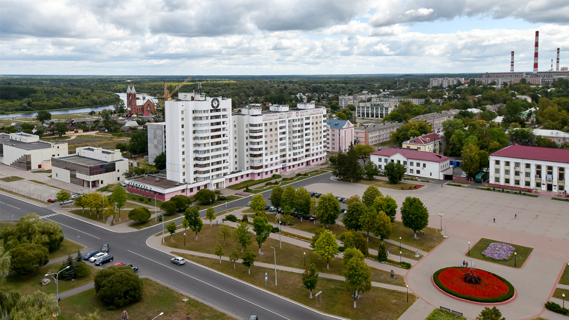
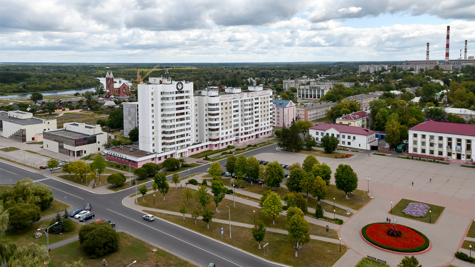

Светлогорск
Светлогорск — город в Гомельской области. Это один из самых молодых городов Беларуси. Административный центр Светлогорского района.
Светлогорск — город в Гомельской области. Это один из самых молодых городов Беларуси. Административный центр Светлогорского района.
Население — 64 989 человек.
Город расположен в Гомельском Полесье, пристань на реке Березина.
Жилая планировка города состоит из следующих частей:
Остальные места, вдоль железной дороги, а также прилегающие к пос. Нефтяников — не имеют вполне сложившихся наименований, хотя в отношении последних иногда употребляется название «Старый аэродром».
• В городе работают 12 общеобразовательных школ, в том числе гимназия; межшкольный учебно-производственный комбинат; 1 профессионально-техническое учреждение.
• Действует индустриальный колледж (основан в 1960 году как филиал Молодечненского политехникума, с 1966 году — Светлогорский индустриальный техникум).
• Есть дом детского и юношеского творчества, детская художественная школа и детская школа искусств.
• Имеются спортивный комплекс, плавательный бассейн, 3 стадиона, теннисный корт.